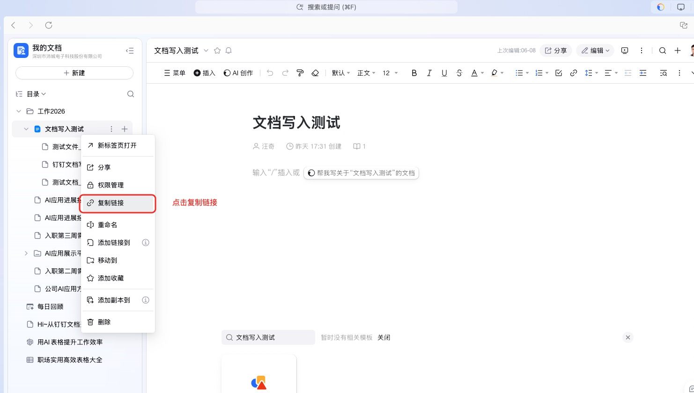
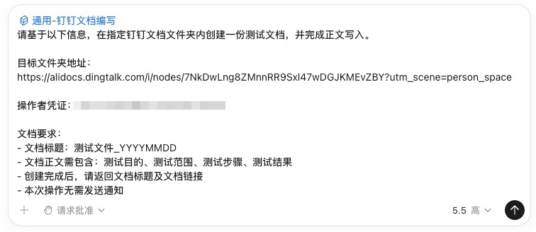
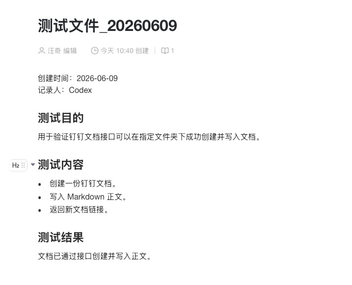
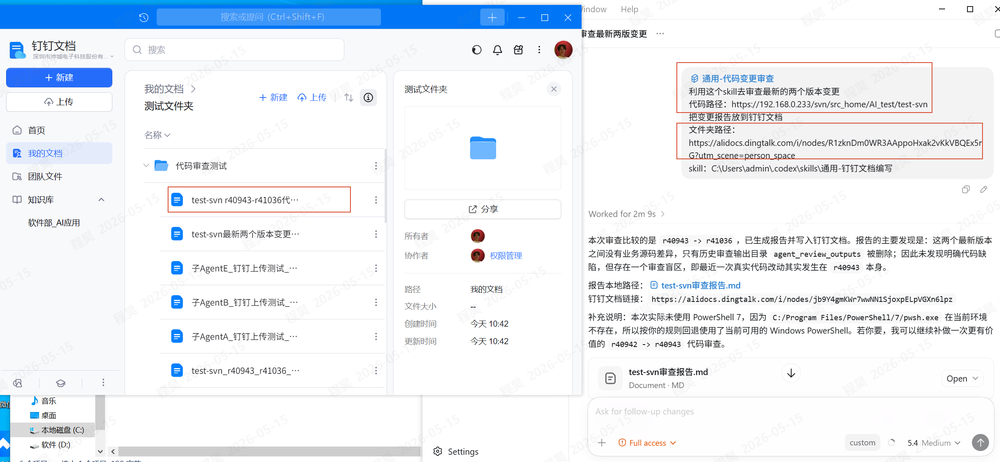
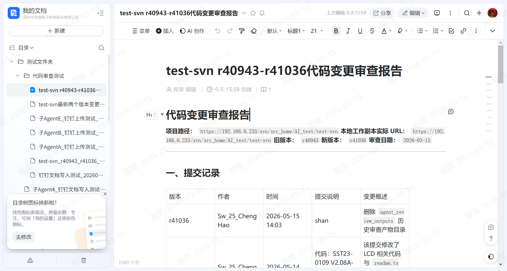
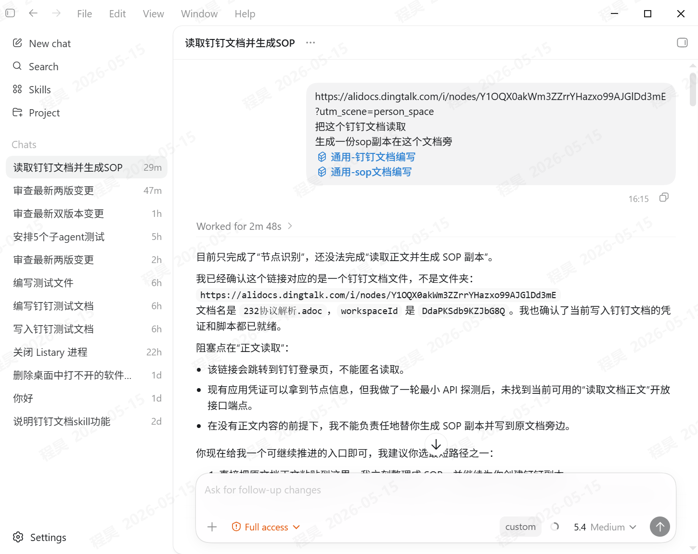
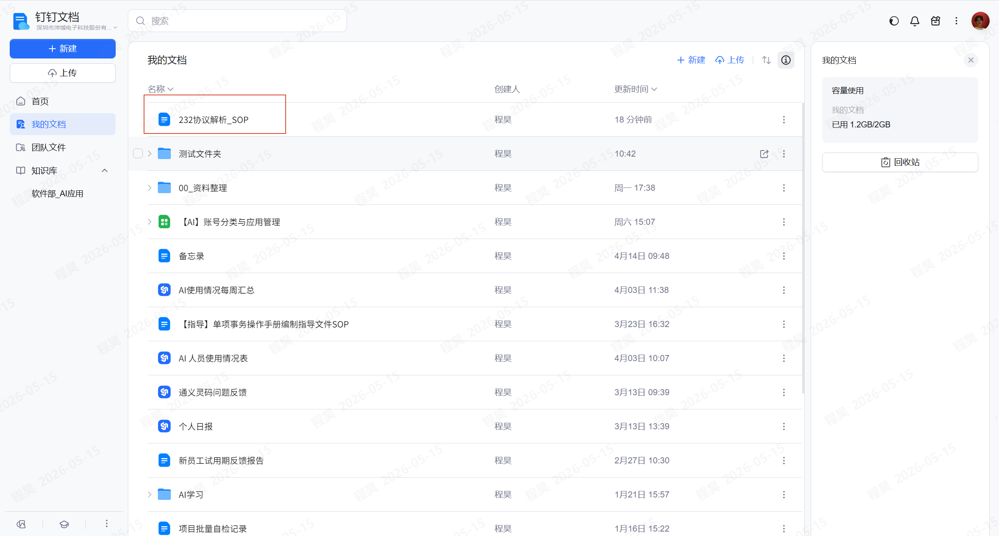

提效工具
钉钉文档写入工具
钉钉文档写入工具主要在 Codex 中通过 通用-钉钉文档编写 这个 Skill 实现，用于在指定钉钉文档文件夹内创建文档并写入正文。
复制需要写入的钉钉文档文件夹地址，确保不是普通文档链接。
操作者凭证找程昊工程师获取，凭证只在需要写入钉钉文档时使用。
在 Codex 中说明使用通用-钉钉文档编写 Skill，并粘贴目标文件夹、凭证和文档要求。
提示词模板
钉钉文档写入工具主要在codex下面实现，需要通用-钉钉文档编写这个skill；
请基于以下信息，在指定钉钉文档文件夹内创建一份测试文档，并完成正文写入。
目标文件夹地址：
...
操作者凭证：
...
文档要求：
- 文档标题：测试文件_YYYYMMDD
- 文档正文需包含：测试目的、测试范围、测试步骤、测试结果
- 创建完成后，请返回文档标题及文档链接
- 本次操作无需发送通知操作步骤
步骤 1
复制钉钉文档文件夹链接
进入目标钉钉文档文件夹，复制文件夹地址，作为提示词中的“目标文件夹地址”。

步骤 2
在 Codex 中粘贴模板
打开 Codex，填写目标文件夹地址、操作者凭证、文档标题和正文要求。操作者凭证找程昊工程师获取。

步骤 3
查看写入结果
创建完成后，检查 Codex 返回的文档标题及文档链接，并打开链接确认正文已写入。

示范案例




注意事项
操作者凭证找程昊工程师获取，不要在公开聊天、截图或文档中暴露完整凭证。
不能写入图片到文档中，本工具仅用于创建文档并写入文本正文。
不能读取识别文档到图片，也不要把图片识别类任务交给该工具处理。